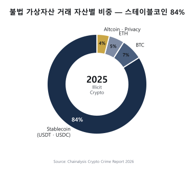
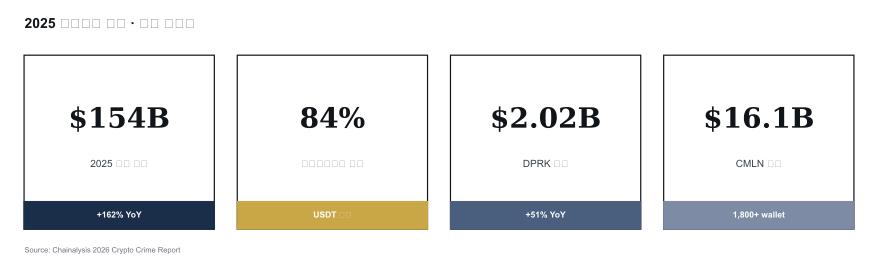

TL;DR
- 자금세탁자는 온체인의 익명성 + 속도 + 자동화를 최대한 활용
- 핵심 9가지 유형: 믹서 · 체인호핑 · 브리지 · peel chain · DEX swap · DeFi lending · 프라이버시코인 · NFT wash · OTC 환전
- 2025~2026 트렌드: cross-chain laundering + CMLN(중국어 자금세탁 네트워크)
- 스테이블코인이 불법거래의 84% (Chainalysis 2026)
- 탐지는 클러스터링 + attribution + behavior pattern 삼박자
1. 왜 9개 유형을 알아야 하나
KYT 룰의 출발점
KYT 시스템의 거의 모든 룰은 이 9개 유형 중 하나를 탐지하려 설계됩니다. "왜 이 룰이 있는가"를 이해하려면 그 룰이 방어하려는 자금세탁 유형을 먼저 알아야 합니다. 유형의 원리를 모른 채 룰만 카피하면 임계값 조정·예외 처리에서 실패합니다.
자금세탁 3단계와의 매핑
| 전통 ML | 가상자산 ML 예시 |
|---|---|
| Placement | 현금 → 거래소 입금, OTC 매수, P2P 거래 |
| Layering | Mixer, chain hopping, bridge, DEX swap, peel chain, NFT wash |
| Integration | OTC 환전, gift card 구매, 부동산·명품 결제, 합법사업체 자금화 |
가상자산은 24~48시간 내 3단계 완주가 가능합니다 (Bybit 사례: 48시간 내 $160M layering 완료). 이게 전통 금융 AML과의 결정적 차이.
2. 9가지 자금세탁 유형 — 원리·도구·탐지 포인트
A. Mixer / Tumbler (믹서)
원리: 여러 사용자의 자금을 한 풀에 섞은 뒤 무작위 금액·시간으로 출금 → 입금 주소와 출금 주소의 온체인 연결을 끊음.
대표 서비스: - Tornado Cash (Ethereum) — zk-SNARK 기반. 2022-08 OFAC 제재 → 2024-11 5th Cir. Van Loon 판결 → 2025-03-21 지정 해제. 해제 후에도 업계는 여전히 위험 카테고리 유지. - Wasabi Wallet (Bitcoin) — CoinJoin. 여러 사용자가 동시에 균등 금액을 섞는 방식. - Samourai Whirlpool (Bitcoin) — CoinJoin, 2024 운영자 체포 후 서비스 종료. - JoinMarket (Bitcoin) — P2P CoinJoin. 메이커/테이커 모델.
탐지 포인트: - 알려진 mixer 스마트컨트랙트 주소 노출 - Denomination 표준화 (Tornado는 0.1/1/10/100 ETH 풀) - Input/Output 개수 균등 (CoinJoin 지문) - mixer 진입 후 정확한 유지시간 분포
B. Chain Hopping (체인 점프)
원리: BTC → ETH → USDT(Tron) → BNB → ... 처럼 여러 체인을 점프하며 흔적을 흐림. 분석 도구가 한 체인에서 끊기는 점 노림.
2026 트렌드: 가장 많이 쓰이는 layering 방식. cross-chain bridge가 핵심 인프라이므로 bridge 탐지가 곧 chain hopping 탐지.
C. Cross-chain Bridge 활용
원리: A 체인에서 자금을 잠그고 B 체인에서 wrapped 토큰 발행 → 추적 단절.
대표 브리지: Wormhole, LayerZero, Synapse, Stargate, Across, Hop, THORChain.
이중 리스크: 브리지 자체가 해킹 1순위 표적이기도 함.
| 사고 | 연도 | 손실 |
|---|---|---|
| Poly Network | 2021 | $611M (이후 반환) |
| Wormhole | 2022 | $325M |
| Ronin Bridge | 2022 | $625M (Lazarus) |
| Nomad | 2022 | $190M |
| Multichain | 2023 | $231M |
탐지 포인트: 브리지 컨트랙트 입출금 인덱싱 + 시간·금액 매칭으로 A→B 체인 연결 복원.
D. Peel Chain (껍질 사슬)
원리: 큰 금액 주소에서 소액씩 떼어내(peel) 다른 주소로 보내고 잔액은 또 다른 주소로 → 길게 늘여진 사슬 패턴.
왜 쓰나: 사람이 일일이 따라가기 어렵게 만드는 의도. 전통 금융 smurfing(분할입금)의 온체인 버전.
탐지 포인트: 그래프 분석 — in-degree/out-degree 패턴, 분기 간격, 소액 상대적 일정성. 그래프 DB에서 시각적으로 거의 일자형 사슬로 보임.
E. DEX Swap (탈중앙거래소 활용)
원리: KYC 없는 DEX(Uniswap, PancakeSwap, Curve)에서 토큰을 교환해 자산 형태를 바꿈. ETH를 USDT로 바꾸면 출처 추적 감각이 끊어짐.
layering 효과: 자산 형태 변환 + 대량 유동성 풀 통과로 흐름 희석.
탐지 포인트: DEX 컨트랙트 노출 + swap 전후 행동 패턴. DEX 자체는 합법이므로 swap 자체가 위험이 아니라 swap 전후 흐름이 위험.
F. DeFi Lending / Liquidity Pool
원리: Aave·Compound에 토큰 입금 → 다른 자산으로 인출. 또는 Uniswap LP(Liquidity Pool) 토큰 발행·소각으로 출처 흐림.
layering 효과: 자산 형태 변환 + 다른 사용자 자금과 혼합.
탐지 포인트: 비정상 LP 진입/퇴출 패턴, 짧은 시간 내 다수 프로토콜 거침.
G. Privacy Coin
원리: 프로토콜 설계 자체가 추적 불가능하도록 익명성 강화.
| 코인 | 기술 | 추적 가능성 |
|---|---|---|
| Monero (XMR) | Ring Signature + Stealth Address + RingCT | 거의 불가 |
| Zcash (ZEC) | zk-SNARK shielded transaction | shielded 사용 시 불가 (선택적) |
| Dash | PrivateSend (CoinJoin 변형) | 제한적 추적 가능 |
| Grin/Beam | MimbleWimble | 어려움 |
운영 현실: 한국·일본 주요 거래소는 privacy coin 전량 상장폐지. 자금세탁자는 privacy coin을 OTC/P2P/비규제 거래소에서만 다루고, 입출 시점에 BTC로 환전해서 들어가고 나옴. 이 진입·탈출 순간이 탐지 기회.
H. NFT Wash Trading
원리: 자기들끼리 NFT를 사고팔며 가격·거래량을 부풀려 자금 이전을 정당화.
유형: - Self-trading — 같은 사람이 양쪽 지갑 보유 - Loop trading — 3자 이상 순환 (A→B→C→A) - 인플레이션 펌프 — 가격 띄워 외부 바이어에 매도
시장 통계: 2022~2023 NFT 광풍 시 wash trading 비중 추정 25~50%. 2025년 NFT 시장 위축 후 거래량 자체 감소했으나 고가 컬렉션(BAYC, CryptoPunks) 중심으로는 여전 활동.
탐지 포인트: 짧은 시간 내 같은 NFT의 반복 거래, 거래자 주소 간 클러스터 관계, 가격 변동 패턴 대비 유동성 부족.
I. OTC Desk (Off-Exchange Counter)
원리: 익명·저KYC OTC desk에서 가상자산 ↔ 법정화폐 환전.
위험 OTC: - 중국어권 텔레그램 OTC — 2025년 자금세탁의 중심축 - 폐쇄된 P2P (Paxful, LocalBitcoins) - 비규제국 소재 OTC
CMLN (Chinese Money Laundering Network) 이 이 영역에서 부상 — 2025년 $16.1B 처리, 1,800+ 활성 wallet. 북한 자금까지 세탁 파트너 역할.
실무 포인트
룰 설계 시 이 9개 유형을 별도 룰 그룹으로 관리해야 false positive 원인을 역추적할 수 있습니다. 한 룰 엔진 안에 유형을 섞어 관리하면 나중에 "왜 이 고객이 차단됐는지" 설명하기 어렵고, STR에 근거를 쓰기도 힘들어집니다.
3. 2025~2026 새로운 트렌드


A. Cross-chain Laundering 가속화
단일 체인 분석으로는 추적 불가능한 수준으로 발전. Chainalysis Crosschain, TRM Multichain Tracing 같은 cross-chain 도구가 KYT 벤더의 핵심 차별점으로 부상. 2025년 자금세탁의 상당 부분이 multi-chain.
B. CMLN (Chinese Money Laundering Networks)
Laundering-as-a-Service(LaaS) 의 등장. 수수료(보통 5~15%)를 받고 세탁 서비스를 제공.
- 2025년 $16.1B 처리, 1,800+ 활성 wallet
- 북한·러시아 자금까지 이용
- 텔레그램·위챗 기반 OTC 네트워크와 결합
- 범죄조직이 자체 세탁 대신 "전문 업체에 아웃소싱" 하는 시대의 시작
C. 스테이블코인 압도적 점유
- 불법거래의 84%가 스테이블코인 (USDT > USDC > 기타)
- 이유: 가격 안정성 + Tron의 저수수료 + 글로벌 환금성
- 동시에 freeze 가능 (Tether/Circle이 실제로 SDN·도난자금 freeze 수행) → 양면
D. 국가 단위 자금세탁
- 러시아 A7A5 stablecoin: 2025-02 발행 후 1년 내 $93.3B 거래 — 제재 회피 인프라
- DPRK Lazarus: 2025년 $2.02B 탈취, 누적 $6.75B
E. 산업화 (Professionalization)
단일 행위자 시대 → 분업 생태계: 해킹팀·세탁팀·환전팀·OTC팀이 각자 전문화. 마치 SaaS처럼 서비스로 제공됨.
실무 포인트
이 트렌드 중 "Laundering-as-a-Service" 의 부상이 가장 구조적 위협입니다. 개별 범죄자가 자체 능력으로 세탁하는 시대에는 KYT 룰이 대응 가능했지만, 전문 세탁업자가 매번 새 기법을 시도하면 탐지 rule 엔지니어링이 군비 경쟁이 됩니다. 이게 KYT 벤더가 ML 연구에 공격적으로 투자하는 이유.
4. 탐지 기법 (방어 측)
A. Address Clustering (주소 클러스터링)
- Common Input Ownership Heuristic (CIOH) — UTXO 모델에서 한 트랜잭션의 input 주소들은 한 사람이 통제. 비트코인 분석의 기본 휴리스틱.
- Change Detection — UTXO 모델에서 거스름돈 주소 식별. 정확도는 보조 휴리스틱 수준.
- Deposit Heuristic — 거래소의 consolidation 패턴을 이용한 거래소 클러스터 식별.
B. Attribution (행위자 매핑)
클러스터를 알려진 엔티티(거래소, 믹서, OFAC)에 연결. Chainalysis·TRM·Elliptic의 라벨 DB가 이 영역의 moat. 라벨 DB는 자체 구축이 거의 불가능 — 수년간의 다크웹 OSINT + 거래소 협업 + 법집행 협력이 쌓여야 작동.
C. Behavior Pattern Analysis
- Peel chain 패턴, mixer 사용 패턴, 시간대 패턴
- 머신러닝 + 룰 베이스 결합
- 이상거래 자동 탐지
D. Cross-chain Tracing
- 브리지 입출금 매칭
- 시간·금액·메타데이터 짝짓기
- memo 또는 wrapped asset의 contract event 인덱싱
E. Exposure Score (위험노출도)
한 주소가 직접·간접으로 몇 hop 안에 mixer·SDN·도난자금에 닿는가를 정량 지표로 표현. KYT 시스템의 대표 출력.
실무 포인트
탐지 기법 5개 중 어느 하나도 단독으로 완벽하지 않습니다. KYT 벤더의 경쟁력은 5개를 잘 조합한 Risk Score 공식이며, 이 공식은 벤더마다 다른 결과를 냅니다. 벤더 선정 시 같은 주소 100개를 여러 벤더에 넣어보고 출력 일치율을 비교하는 PoC가 필수.
5. 탐지의 한계 — 무엇이 안 되는가
- Privacy coin: 거의 추적 불가 (Monero)
- Off-chain trade: 거래소 내부 트랜잭션은 외부에서 안 보임 (CEX 내부 이체)
- 새로운 mixer·bridge: 라벨링 안 된 시점에는 탐지 어려움 (Lag Time)
- Adversarial behavior: 분석 도구를 회피하는 패턴 학습됨 (무작위 금액·시간)
- 법적 제한: 한 회사가 다른 회사 고객 정보 보기 어려움 (개인정보 보호법)
실무 포인트
탐지 실패는 기술 한계와 법적 한계가 겹쳐서 발생합니다. "왜 이 자금세탁을 못 잡았나"에 대한 사후 분석에서 기술적 개선만 추구하면 한계가 있고, 업계 협력(공유 attribution DB, 법집행 협업)이 동시에 발전해야 전체 탐지율이 올라갑니다.
6. 거래소·수탁업자 관점 — 어떤 패턴 알람을 봐야 하나
□ 입금 주소가 알려진 mixer / SDN / 도난자금에 N hop 내 노출
□ 출금 요청 주소가 위 동일
□ 단기간 내 다수 주소에서 분할 입금 (smurfing)
□ 입금 직후 즉시 전액 출금 (pass-through)
□ 비정상 시간대 거래 (UTC 기준 새벽 등)
□ peel chain 패턴 진입
□ DEX / bridge로의 빈번한 출금
□ NFT wash trading 의심 패턴
□ KYC 정보와 거래 패턴 불일치 (신고소득 대비 거액)
□ 특정 국가 IP·VPN 패턴 + 고위험 출금 조합
실무 포인트
위 10개 알람은 같은 강도가 아닙니다. "OFAC 1-hop 노출"은 즉시 차단 + STR, "비정상 시간대 거래"는 단독 시그널로는 약함. 룰 설계 시 단일 시그널 차단을 최소화하고 복합 시그널 조합에 의존하는 구조가 false positive를 줄입니다.
요약 부록 — 빠른 참조용
9대 유형: Mixer · Chain Hopping · Bridge · Peel Chain · DEX Swap · DeFi L/LP · Privacy Coin · NFT Wash · OTC 탐지 5축: Clustering · Attribution · Behavior · Cross-chain · Exposure 2025 트렌드: Cross-chain / CMLN / 스테이블코인 / 국가세탁 / LaaS 산업화
더 읽을거리
vasp-obligations.md— VASP 의무defi-nft-risks.md— DeFi·NFT·프라이버시 코인 상세../4-technology/blockchain-analytics.md— 블록체인 분석 기법../6-cases/lazarus-dprk.md— DPRK 실제 사례- Chainalysis 2026 Crypto Crime Report
- TRM Labs Blog